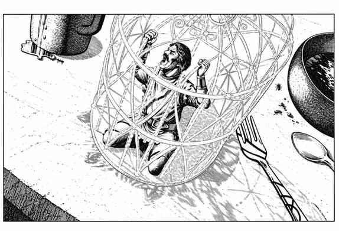

力牢术 · Forcecage
造出一座力场牢笼。它不是实心的力场方盒，而是交错的力场条，中间留有 1/2 尺（英尺）宽的空隙；能穿过空隙的生物可离开，法术和喷吐武器也能穿过。范围内生物均被困，除非可挤过空隙；有魔法抗性者可尝试一次穿过牢笼壁，失败便受困。一个生物成功逃脱并不放走同处牢笼内的其他生物。力牢只能被解除魔法消去，或等持续时间结束。
记忆法术时经特殊准备，可把它改成力场方盒 Forcecube：影响体积变成八分之一，即边长 1″的实心力场方盒；除施法与魔法器具之间本就存在的差别及破坏方式外，其余如同力场方盒器具。
实际施展两种版本均不需材料；但记忆时必须磨碎价值至少 1,000 金币的钻石，用钻石粉描出将来所要施展的牢笼或方盒轮廓。学习记忆完成后须把粉末抛向空中，粉末随即消失。

上一节：放逐术 · Banishment
下一节：莫登凯南的豪宅 · Mordenkainen's Magnificent Mansion